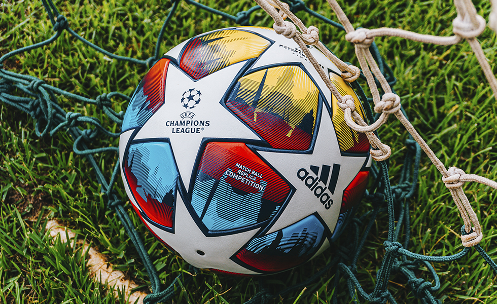

O futebol é o esporte mais popular e amado no Brasil, e também uma paixão mundial que movimenta milhões de fãs. No país, o futebol vai muito além de um simples jogo; ele é parte fundamental da cultura, da identidade e da história nacional.
Desde o seu surgimento no início do século XX, o futebol brasileiro conquistou o mundo com seu estilo único, marcado por habilidade, criatividade e técnica apurada.

principais competições de futebol no Brasil incluem o Campeonato Brasileiro, a Copa do Brasil e os campeonatos estaduais, como o Paulista e o Carioca, que têm tradições centenárias. Grandes clubes como Flamengo, Palmeiras, São Paulo, Corinthians, Santos e Grêmio contam com torcidas apaixonadas que acompanham os jogos com enorme fervor. Além disso, a rivalidade entre esses times gera clássicos que são verdadeiros eventos para a população.
No cenário internacional, o Brasil é a seleção mais bem-sucedida da história da Copa do Mundo, com cinco títulos conquistados (1958, 1962, 1970, 1994 e 2002). A Seleção Brasileira, conhecida como “Canarinho”, revelou ídolos como Pelé, Zico, Romário, Ronaldo, Ronaldinho Gaúcho e Neymar, jogadores que encantaram gerações e ajudaram a construir a fama do Brasil como “país do futebol”.
Além do aspecto esportivo, o futebol também tem papel social importante, especialmente nas comunidades mais pobres, onde projetos sociais utilizam o esporte para promover inclusão, educação e cidadania. O futebol brasileiro continua a evoluir, mesclando tradição e modernidade, e segue sendo uma das maiores paixões do país, unindo pessoas de todas as idades, classes sociais e regiões.

elaborado por João Gabriel